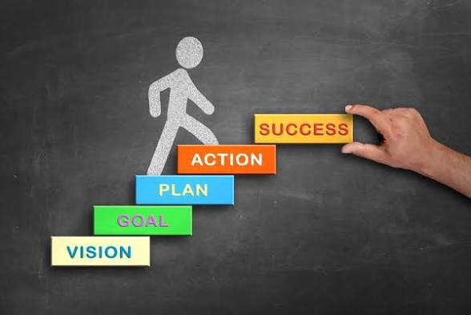

Success is not just a destination- it's a journey built on habits,
mindset,and consistent effort. Anyone can achieve success by
understanding what it takes and following clear guildlines.Here are key
principles to guild your path:

Success Steps
Set Clear Goals: Define what success truly means to you,
not what others think it should be. Take time to reflect on your
personal and professional aspirations. Break big, long-term goals into
smaller, achievable milestones that are measurable and time-bound.
Writing down your goals is essential. it makes them tangible and keeps
your mind focused. Review them regularly, track your progress, and
adjust them as necessary. This not only keeps you accountable but also
allows you to celebrate small victories along the way, boosting
motivation and confidence.
Continuous Learning Never stop being curious:
Continuously seek knowledge, skills, and experiences that move you
closer to your goals. Explore new tools, techniques, and technologies
in your field to stay ahead of the curve. Read books, attend
workshops, watch tutorials, take courses, or learn from mentors.
Embrace the mindset that learning is a lifelong process every new
skill or piece of knowledge adds value to your personal growth and
professional success. Even small, daily learning habits can compound
into significant expertise over time.
Discipline and Consistency: Consistency is the bridge
between goals and results. Small, deliberate actions taken every day
compound into significant achievements over time. Discipline means
showing up even when you don't feel like it, avoiding procrastination,
and following routines that support your growth. Set clear schedules,
prioritize tasks, and stick to habits that align with your goals.
Remember, talent alone won't bring success persistent, consistent
effort is what separates those who achieve from those who only dream.
Adapt and Learn from Mistakes: Mistakes are not setbacks
they are stepping stones to growth. Every failure contains a lesson
that can guide you toward improvement. Instead of dwelling on errors
or feeling discouraged, analyze what went wrong, extract the lesson,
and adjust your strategy accordingly. Cultivate resilience and
flexibility; the ability to adapt quickly to changing circumstances or
unexpected challenges is a hallmark of successful people. Over time,
learning from mistakes helps refine your skills, decision-making, and
problem-solving abilities.
Stay Motivated and Positive: Your mindset determines how
far you will go. Surround yourself with supportive people who uplift
you and inspiring content that fuels your ambitions. Avoid negativity
and limit exposure to influences that drain your energy or distract
you from your goals. Celebrate small wins regularly,they are proof of
progress and help maintain enthusiasm. Develop a growth-oriented
mindset where challenges are seen as opportunities rather than
obstacles. Motivation fluctuates, but positivity and persistence keep
you moving forward consistently.
Apply Your Knowledge: Knowledge without action has little
value. To truly grow, apply what you learn through projects,
experiments, and real-world challenges. Practice solidifies
understanding, exposes gaps in your skills, and teaches
problem-solving in context. Take initiative to work on small projects,
freelance, or collaborate with others to put your theories into
action. Over time, consistent application transforms knowledge into
mastery, builds confidence, and positions you as someone who not only
knows but can also execute effectively in the real world.